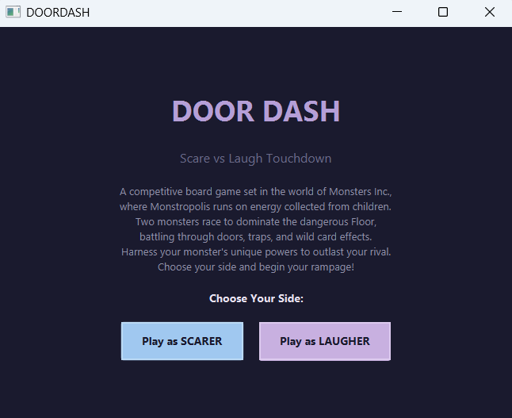
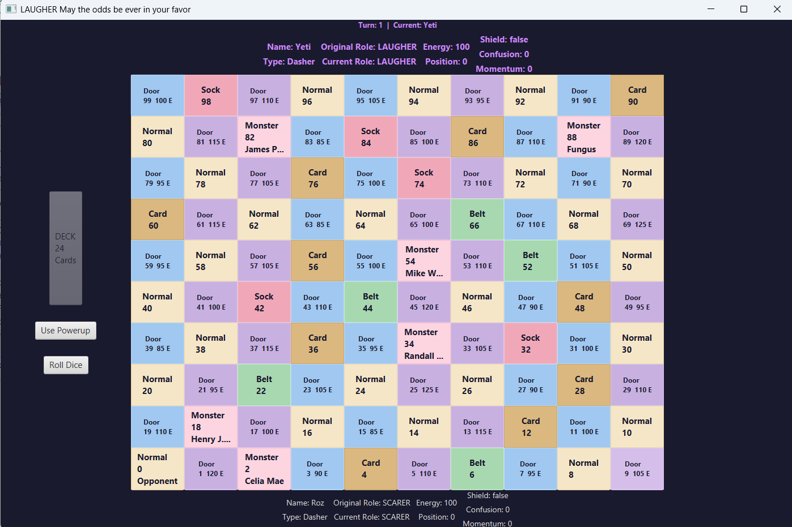

A competitive Java desktop board game set in the Monsters, Inc. universe, built on object-oriented class hierarchies and driven by CSV data.

DoorDasH is a two-player board game set in the world of Monsters, Inc., where the city runs on energy collected from children. Two monsters race across a numbered board of a hundred cells, battling through doors, traps, and wild card effects, each using their own powers to outlast the other. One player takes the Scarer side, the other the Laugher side.
The interesting part of the build wasn't the UI — it was modeling a game with many kinds of things that share behavior but differ in the details. There are several types of monster, several types of card, and several types of board cell, and each type needs its own rules while still being handled uniformly by the game loop. That's a classic object-oriented modeling problem, and it drove the whole structure of the code.
The domain is built on three class hierarchies, each using abstraction so the game engine can treat every variant through a shared interface:
Monster base with four concrete subclasses, so each monster type carries its own powers while sharing common state (energy, position, role).Card base with five concrete subclasses, one per card behavior.Cell hierarchy where Cell itself is concrete, with TransportCell as an abstract subclass that specialized moving-cell types extend.Using abstract bases here means the game loop never needs a giant switch statement over "what kind of thing is this" — each subclass knows how to behave, and the engine just calls the shared method.
The game's content lives in CSV files rather than being hard-coded, so the board, monsters, and cards can change without touching the game logic. There are three CSV formats, each with a distinct row shape for its type; the cards file, for example, carries a rarity field that the others don't. Parsing each format into the right objects is what connects the data files to the class hierarchies above.

DoorDasH was built by a team of four, working through the design together rather than splitting it into separate territories — so I worked across the whole system, from the class hierarchies to the CSV parsing to the game loop. Building it collaboratively meant every design decision had to be one the whole team understood and agreed on, which is a large part of why the structure stayed consistent. It also made me a better team player: I learned to write code and make design choices that the rest of the team could pick up and build on, not just ones that made sense to me.
The full source is on GitHub.